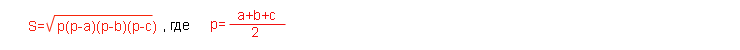

В JS определены некоторые стандартные обьекты и функции. Рассмотрим объект math и его методы
Объект math работает с математическими функциями, а его методы можно использовать для вызова этих функций.
Некоторые методы объекта math:
| метод | описание |
|---|---|
| abs | абсолютное значение |
| sin, cos, tan | тригонометрическе функции |
| log | натуральный логарифм |
| exp | экспонента |
| pow | показательная функция |
| sqrt | квадратный корень |
| min | наименьшее значение |
| max | наибольшее значение |
Пример: создание формы, которая будет считать площадь треугольника по длинне его сторон. Понадобится формула Герона:
Пишу саму форму для начала:
Итого:
1.Пишу форму в html - уже пора бы запомнить как! Главное - не забудь name="..."
2. Пишу функцию в js:
function areaOfTriangle(obj) {
var a=1*obj.st1.value;
var b=1*obj.st2.value;
var c=1*obj.st3.value;
var p=(a+b+c)/2;
var s=Math.sqrt(p*(p-a)*(p-b)*(p-c));
obj.res.value=s;
}
1* в переменных - для того, что бы перевести значения из полей формы в Number, поскольку изначально они - string. Если бы я их умножал - перевелись бы сами, а поскольку "+" это воспринялось бы как конкатенация строк.
Обязательно взять в скобки выражение после Math.sqrt(....вот в эти скобки!)
3. Есть ещё ньюанс - число результата вычисляется с дробной часть, которая может быть бесконечно длинной, надо указать только 2 знака после запятой, это делает метод toFixed обьекта Number:
(x).toFixed(N)
Где х - число, которое нужно округлить, а N - число знаков после запятой.
Немного подправляю функцию (добавляю округление):
function areaOfTriangle(obj) {
var a=1*obj.st1.value;
var b=1*obj.st2.value;
var c=1*obj.st3.value;
var p=(a+b+c)/2;
var s=Math.sqrt(p*(p-a)*(p-b)*(p-c));
s=s.toFixed(2);
obj.res.value=s;
}
Синтакси:
if B {S1}
else {S2}
Где: В - выражение логического типа, а S1 и S2 - операторы
Работает это следующим образом: вычисляется значение выражения В, если оно истинно, то выполняется оператор S1, если ложно - выполняется S2. Строку else {S2} можно опустить.
Пример: форма, в которую пользователь вводит три значения, и при нажатии кнопки "макс. значение" исчеться максимальное:
Итого:
1) Пишу форму, как обычно - помни про имена, и в самой форме указать вызов функции с параметром (имя формы)
2) Пишу функцию с ветвлением, опуская else:
function maxZnach(obj) {
var a=1*obj.zn1.value;
var b=1*obj.zn2.value;
var c=1*obj.zn3.value;
var m=a;
if (b>m) m=b;
if (c>m) m=c;
obj.res.value=m;
}
m - максимальное значение, сначала это а, потом сравниваю с b если b больше - m становится b (или остаётся а если b меньше). Потом аналогично сравниваю с с. Потом вывожу m в поле res.
Можно аналогичную функцию записть с помощью метода max обьекта Math:
function maxZnach_alt (obj) {
var a=1*obj.zn1.value;
var b=1*obj.zn2.value;
var c=1*obj.zn3.value;
obj.res.value=Math.max(Math.max(a,b),c);
}
Плавное увеличение картинки:
По клику на картинку - должна увеличится

Игото:
1) Картинку на страницу - размер ей, и имя не забыть!
2) Функцию пишу + setTimeout - функция (стандартная) вызывающая пользовательскую функцию с заданным промежутком времени.
function bigPict() {
var w=document.tigr.width;
if(w<302){
document.tigr.width=w+1;
document.tigr.src="tigrenok.jpg";
setTimeout("bigPict()", 20);
}
}
3) Уменьшаю/увеличиваю шаг, для придания плавности.
Вобщем - ничего сложного. Главное - внимательно! Дальше ещё заданье - сделать так, что б при отводе мыши изображение сужалось. Сделал, даже в примере с сайта так-же, но оно криво, поскольку мышь можно отвести когда функция ещё не выполнилась полностью. Надо учится останавливать функции, когда захочу. Пока что хватит.